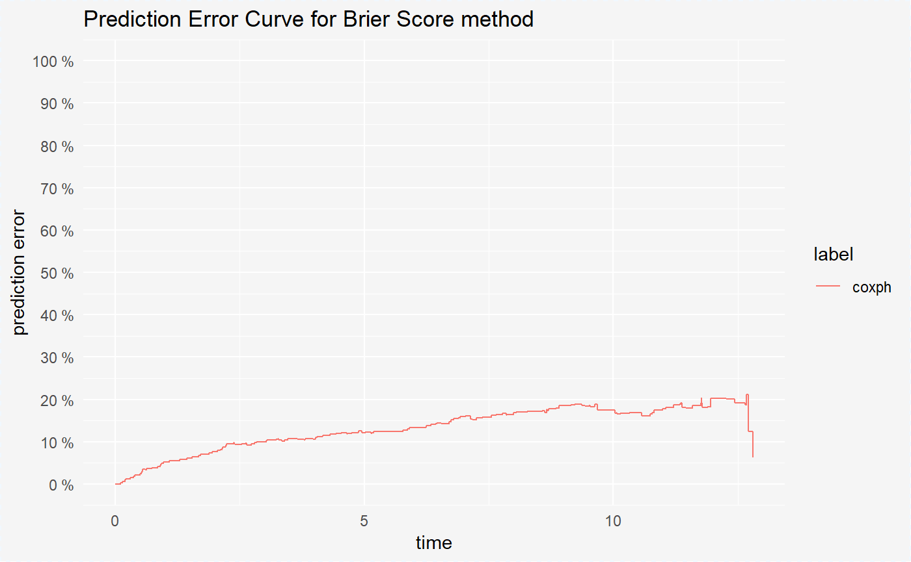
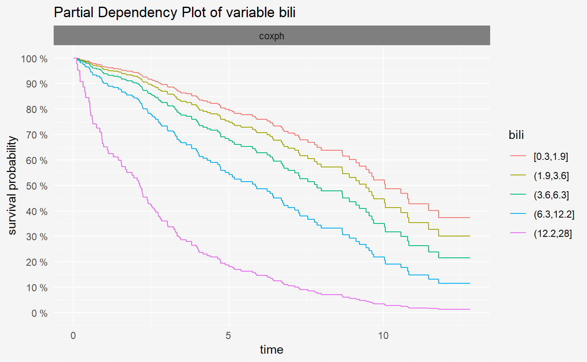

Survival models - global explanations
Alicja Gosiewska
2018-08-20
Global_explanations.RmdIntroduction
Package survxai contains functions for creating a unified representation of a survival models. Such representations can be further processed by various survival explainers. Tools implemented in survxai help to understand how input variables are used in the model and what impact do they have on final model prediction.
The analyses carried out using this package can be divided into two parts: local analyses of new observations and global analyses showing the structures of survival models. This vignette describes local explanations.
Methods and functions in survxai package are based on DALEX package.
Use case - data
Data set
In our use case we will use the data from the Mayo Clinic trial in primary biliary cirrhosis (PBC) of the liver conducted between 1974 and 1984. A total of 424 PBC patients, referred to Mayo Clinic during that ten-year interval, met eligibility criteria for the randomized placebo controlled trial of the drug D-penicillamine. The first 312 cases in the data set participated in the randomized trial and contain largely complete data. The pbc data is included in the randomForestSRC package.
data(pbc, package = "randomForestSRC")
pbc <- pbc[complete.cases(pbc),]
head(pbc)## days status treatment age sex ascites hepatom spiders edema bili chol
## 1 400 1 1 21464 1 1 1 1 1.0 14.5 261
## 2 4500 0 1 20617 1 0 1 1 0.0 1.1 302
## 3 1012 1 1 25594 0 0 0 0 0.5 1.4 176
## 4 1925 1 1 19994 1 0 1 1 0.5 1.8 244
## 5 1504 0 2 13918 1 0 1 1 0.0 3.4 279
## 7 1832 0 2 20284 1 0 1 0 0.0 1.0 322
## albumin copper alk sgot trig platelet prothrombin stage
## 1 2.60 156 1718.0 137.95 172 190 12.2 4
## 2 4.14 54 7394.8 113.52 88 221 10.6 3
## 3 3.48 210 516.0 96.10 55 151 12.0 4
## 4 2.54 64 6121.8 60.63 92 183 10.3 4
## 5 3.53 143 671.0 113.15 72 136 10.9 3
## 7 4.09 52 824.0 60.45 213 204 9.7 3Our original data set contains only the numerical variables. For this usecase we convert variables sex and stage to factor variables.
pbc$sex <- as.factor(pbc$sex)
pbc$stage <- as.factor(pbc$stage)Model
We will create Cox proportional hazards model based on five variables from our data set: age, treatment, status, sex and bili.
set.seed(1024)
library(rms)
library(survxai)
pbc_smaller <- pbc[,c("days", "status", "treatment", "sex", "age", "bili", "stage")]
pbc_smaller$years <- pbc_smaller$days/356
pbc_smaller <- pbc_smaller[,-1]
head(pbc_smaller)## status treatment sex age bili stage years
## 1 1 1 1 21464 14.5 4 1.123596
## 2 0 1 1 20617 1.1 3 12.640449
## 3 1 1 0 25594 1.4 4 2.842697
## 4 1 1 1 19994 1.8 4 5.407303
## 5 0 2 1 13918 3.4 3 4.224719
## 7 0 2 1 20284 1.0 3 5.146067cph_model <- cph(Surv(years, status)~., data = pbc_smaller, surv = TRUE, x = TRUE, y=TRUE)Global explanations
In this section we focus on explanations of the global and conditional model structure.
Explainers
First, we have to create survival explainers - objects to wrap-up the black-box model with meta-data. Explainers unify model interfacing.
Some models require custom predict function. Examples are in Explainations of different survival models vignette.
surve_cph <- explain(model = cph_model,
data = pbc_smaller[,-c(1,7)],
y = Surv(pbc_smaller$years, pbc_smaller$status))
print(surve_cph)## Model label: coxph
## Model class: cph,rms,coxph
## Data head :
## treatment sex age bili stage
## 1 1 1 21464 14.5 4
## 2 1 1 20617 1.1 3Model performance
Currently, in the survxai package is implemented only the BS type of model performance. In this metod for each time point we compute the prediction error for our model.
mp_cph <- model_performance(surve_cph)
print(mp_cph)## Model performance for Brier Score method.
## time prediction error
## 1 0.1151685 ~ 0.34%
## 2 0.1432584 ~ 0.66%
## 3 0.1994382 ~ 0.99%
## 4 0.2162921 ~ 1.22%
## 5 0.3089888 ~ 1.54%
## 6 0.3679775 ~ 1.83%
## 7 0.3932584 ~ 2.16%
## 8 0.5028090 ~ 2.46%
## 9 0.5224719 ~ 2.8%
## 10 0.5365169 ~ 3.12%After creating the surv_model_prediction object we can visualize it in a very convinient way using the generic plot() function. On our plot there are prediction error curves for model from the explainer. For more details about these curves see: Mogensen, 2012
plot(mp_cph)
Variable response
Variable response explainers are designed to better understand the relation between a variable and a model output. These types of explainers are inspired among others by pdp package Greenwell, 2017.
vr_cph_sex <- variable_response(surve_cph, "sex")
print(vr_cph_sex)## x y value type label var
## 1 0.1151685 0.9965777 1 pdp coxph sex
## 2 0.1432584 0.9930731 1 pdp coxph sex
## 3 0.1994382 0.9895666 1 pdp coxph sex
## 4 0.2162921 0.9860792 1 pdp coxph sex
## 5 0.3089888 0.9824812 1 pdp coxph sex
## 6 0.3679775 0.9789421 1 pdp coxph sexvr_cph_bili <- variable_response(surve_cph, "bili")After creating the surv_variable_response objects we can visualize them in a very convinient way using the generic plot() function.
Variable response plots for survival models are survival curves conditioned by one variable. Each curve represent different value of chosen variable. For factor variables curves covers all possible values, for numeric variables values are divided into quantiles.
Variable response plot illustrates how will the mean survival curve change along with the changing variable value.
plot(vr_cph_sex)
plot(vr_cph_bili)